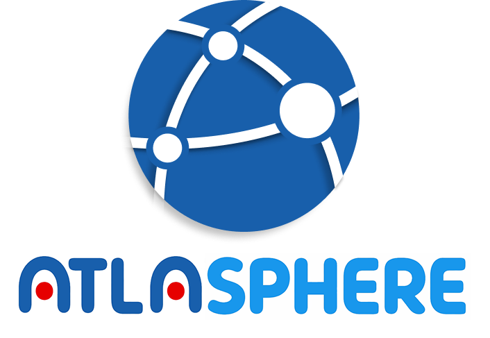
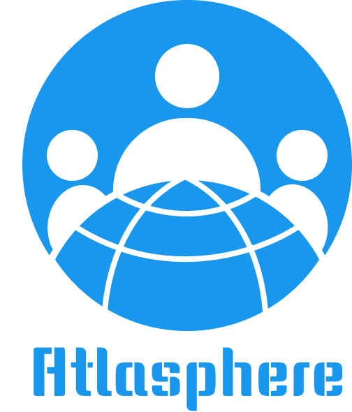
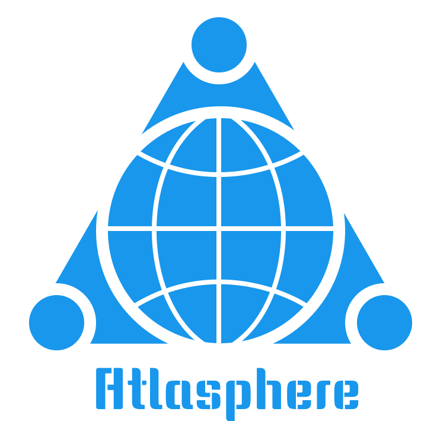
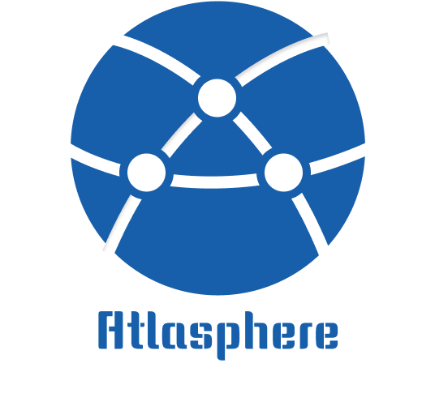
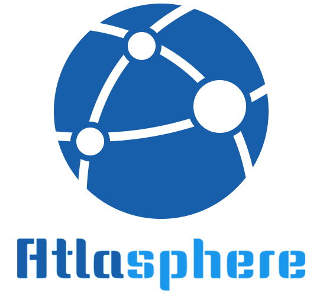
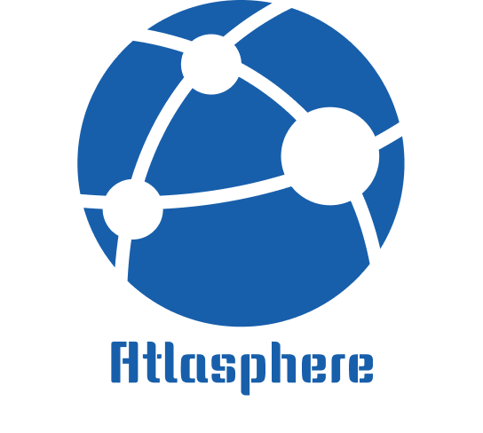
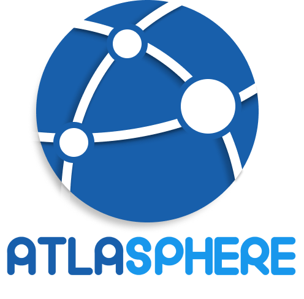
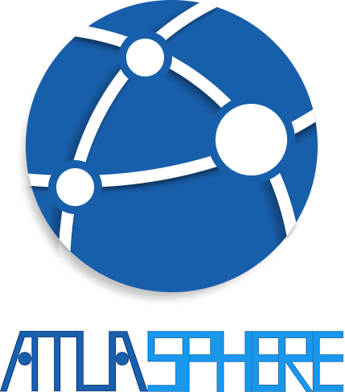
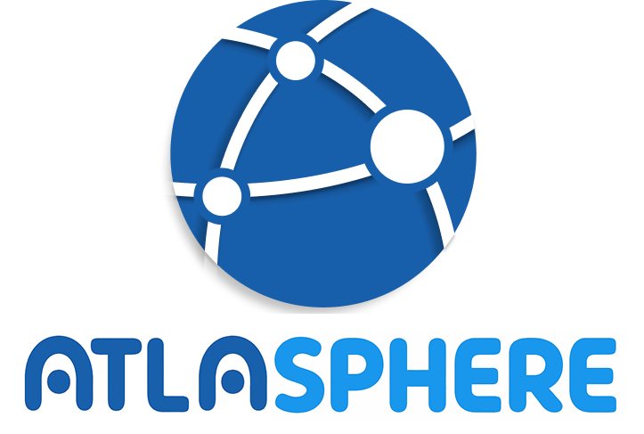

Travel App Identity · Logo & Logotype Exploration
Logo and Logotype for Travel App: Atlasphere
Visual research for a travel web app centred on groups, votes, chat, routes, shared destination decisions, and a custom wordmark built around the idea of the sphere.

From travel search to collective decision-making
Atlasphere can be understood as more than a travel-information interface. The project imagines travel planning as an integrated social process: destination search, route planning, voting, chat, notifications, and shared decisions are brought into one app instead of being scattered across separate tools. The aim was to make planning feel less like individual browsing and more like a collective conversation.
This shaped the way I understood the app's identity. Atlasphere should not only answer where a user might go, but help a group discuss what they value, compare possible destinations, and turn social exchange into a practical route. Destination pages, country and city selection, itinerary length, votes, group chat, and notification badges all point to the same design problem: travel planning is social, and the interface has to make shared decisions visible.
Atlas, sphere, and the image of carrying a world
The word atlas originally means a collection of maps. Its name is connected to Atlas in Greek mythology, the Titan often associated with bearing the heavens. In the sixteenth century, the geographer Gerardus Mercator used an engraved image of Atlas carrying the sky on the cover of his map collection. After that, atlas gradually came to mean a bound book of maps, a book that symbolically carries the world.
Sphere comes from the ancient Greek sphaira, meaning a ball or globe. It later came to refer to spherical bodies, globes, and celestial forms. The name Atlasphere therefore combines the atlas as a structure for holding the world with the sphere as a spatial, planetary, and navigational form.
Logo Question
A mark for routes, people, and a shared world
The logo design was my auxiliary contribution to the project and was ultimately not used on the deployed website. Even so, it helped test what kind of visual language could represent Atlasphere at an early stage. The main question was how to avoid the most predictable travel-app symbols, such as a single pin, suitcase, or airplane, while still making the identity immediately legible as travel-related.
My first idea was to emphasise people, because the app is built around users planning together. The earliest logo therefore placed three connected human figures on the surface of a globe. In the next direction, I used a triangular structure to stress the initial letter A in Atlasphere. From the sixth image onward, I refined the final logo direction: a globe-like form marked by more casual, naturally arranged circles. These circles suggest a user network, while also implying small worlds inside the larger world. Each person becomes a small universe moving through the shared space of travel.
The sphere became the primary structure of the mark. It refers to the atlas and to global movement, while the curved white paths suggest routes, itinerary branches, and different travel decisions. The circular nodes represent users, destinations, and points of agreement inside a group-planning process. The mark tries to connect geography with social interaction: a map is not only a surface to search, but a field of choices made together.
Logo development, images 1-6






Logotype Development
Making the name feel spherical, playful, and app-native
At first, I chose typefaces available in Figma and Adobe Illustrator. This was a practical starting point, shaped by my experience of making the app interface and by the general visual direction of the project. After later suggestions from my teammates, I moved toward a more playful logotype that could express the idea of sphere more directly.
In Chinese, people also describe global travel as "huanqiu lüxing", literally a round-the-world trip. That linguistic association helped me think about the wordmark as something circular rather than purely linear. I therefore began to emphasise round forms inside the letters, so that the logotype would echo the atlas, the globe above it, and the circular nodes inserted into the logo. In the final direction, the name itself responds to the app's meaning: Atlasphere becomes both a map-based travel tool and a visual system of spheres within spheres.
Logotype development, images 7-9


A supporting identity study, even without final adoption
Because Atlasphere became a complete Node.js, Express, and EJS web application, the final product required many decisions beyond the logo: UI structure, group creation flow, page-route relationships, API research, and notification behaviour. My work on the logo sits beside those contributions rather than replacing them.
The logo and logotype were not adopted in the live app, but they clarified a direction for thinking about Atlasphere's identity. The blue palette, circular geometry, route lines, node system, and rounded custom lettering all express the same idea that shaped my interface work: travel planning is not a static database query, but a process of comparing places, gathering preferences, and turning dispersed information into a shared plan.